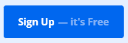
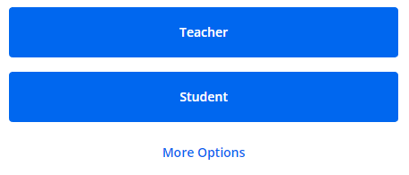
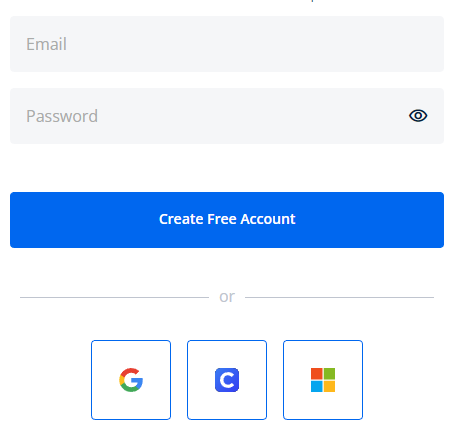

Hoe gebruik ik Formative? (account)
-

Account aanmaken stap 1
Als u de site opent zou u deze knop moeten zien. Klik hierop. -

Account aanmaken stap 2
Hier kan u de tool laten weten wat uw job is. U kan extra functies krijgen aan de hand van wat u hier kiest. -

Account aanmaken stap 3
Om een account aan te maken kan u uw e-mail invoeren en een wachtwoord ingeven. U kan ook op andere manieren een account aanmaken, deze zijn de 3 blauw omcirkelde knoppen onder de grijze lijn met "or".